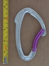

Carabiner Collection Criteria
I have chosen to shape this personal collection with a few criteria given the availability of various carabiner models.
My primary interest and expertise is in tree climbing, which uses locking carabiners almost exclusively. As such, I primarily focus on the acquisition of locking carabiners, but non-lockers have been produced in far greater numbers, for much longer.
Non-lockers tend to highlight changes or dead-ends of carabiner design and seem to keep showing up in my collection... (plus I'm not one to toss aside a carabiner even if it's a little boring).
Listed below in order of importance are the criteria I use to evaluate adding new carabiners, along with a few examples:
Mechanically Unique or Interesting
My core interest and the core focus of the collection - by definition mostly secured/locking carabiners.
BD's Magnetron - magnetic locking mechanism
CMC's Manual Lock - spring assisted locking mechanism
Grivel Tau T - single sprung multi-gate carabiner
Discipline Demonstration
Highlights a particular use unique or core to a particular rope discipline. The tools look similar, but reveal differences in domain hazards and user needs.
YOKE N-256G - ANSI rated gate for working at height
Petzl Vertigo - light security but fast to operate for via ferrata
Manufacturing, Engineering & Design
A look into the minds of the makers.
Climb High Oval - Milled nose and recessed pins instead of modern forging and rivets (manufacturing)
JC - split spine for increased rope bearing surface from smaller stock material (engineering)
CAMP STEELKAR - dangerously wide gate causes accidental opening (design)
Iconic or Industry Standard
They may be common, but were an early example of "getting it right" or the culmination of years of small changes in the industry.
Petzl Attache - Iconic HMS
Petzl Spirit - the standard quickdraw carabiner to which all others were compared
Part of a Historical Pattern
A complete range of carabiner designs from a particular company highlights how the company or climbing industry has changed over the years.
Black Diamond's compact screwgates:
Recent-ish Updates
- 2022-08-03: some Markings on individual carabiner pages will use inline icons (WIP)
- 2022-07-26: added description/commentary for Grivel Vlad and minor editorial changes throughout.
- 2022-07-25: updated description for BD Gridlock added descriptions for:
- Petzl Vertigo WireLock
- Royal Robbins / Salewa (Hollow) Oval
- Simond Spider Bent Gate
- Simond Spider Straight Gate
- 2022-07-24: updated description for the DMM Ultra-O Durolock and added descriptions for:
- 2022-07-23: added a section on understanding the shorthand I used when describing carabiner Markings
- 2022-07-22: some stylistic changes for improved accessibility
- 2022-07-21: added entry and photos for Black Diamond The Fin 
- 2022-07-19: added entries and photos for 19 carabiners:
- Black Diamond Oval (v1)
- Black Diamond Oval Keylock Screwgate
- CAMP screwlock D
- Edelrid (HMS)
- Liberty Mountain D
- Mammut Bionic HMS
- Omega 08
- Omega 11
- Omega Pacific Standard Oval
- Petzl Am'D Ball Lock v2b
- Petzl Attache 3D
- Petzl Caritool v1
- Petzl William Ball Lock
- Pierre Allain (asymmetric D)
- Pierre Allain (asymmetric D) (anodized gate)
- Pierre Allain (latchless) v2
- SMC D Locking
- SMC Oval with brake bar
- YOKE N-256G v1b
- 2022-07-18: steel carabiners and photos added, nav improved
- 2022-07-17: updated carabiner weight and size data for 11 carabiners
- 2022-07-16: created landing page, carabiners grouped by category on separate pages. And an All Images page
- 2022-07-14: further differentiated carabiner profiles using hourglass and baseball-bat terms. Updated information for 6 carabiners.
- 2022-07-13: added additional information (weights, dimensions, markings mostly) on 40 carabiners
- 2022-07-12: Grouped similar versions of carabiners on their own group pages & fixed some permalinks.
- 2022-07-04: Improved star sorting & added main page navigation.
- 2022-07-02: Added entries for 35 models and 160 photos. 114 total entries.
- <2022-07-X:
- Added indicator for personal favorites or collection highlights
- Added hyperlinks to patents (when present).
- Fleshed out the Terminology page with guards and shrouds.
- Added 8 new carabiners to the site.
- Added this updates section.